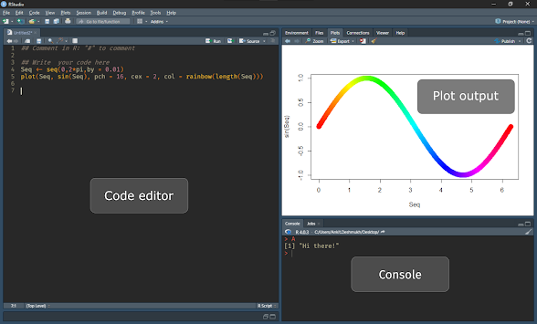

Using R studio as R-IDE
R studio has multiple windows but the most important are Code editor, console, Environment variable pane, and plot output pane.

Figure 1: R-Studio IDE have many pans.
R studio has multiple windows but the most important are Code editor, console, Environment variable pane, and plot output pane.
Figure 1: R-Studio IDE have many pans.
You will write your code in this window. R used # as the comment character. To assign a variable to a value we use ← (lowercase followed by a dash).
